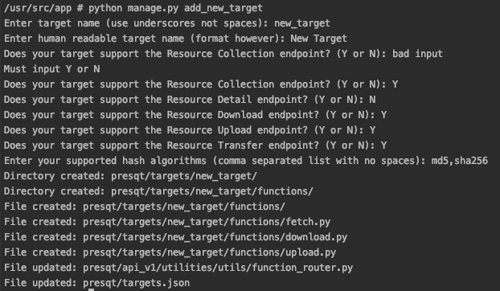

Integration Management Command¶
To make the process of new target integration easier, there is a Django management command that can be run to automate the integration process. It will update the necessary files and create directories and functions for you.
python manage.py add_new_target will start the command. the command will ask a series of questions
about the new target and then create/update files while giving a log of what was done.

Example Screenshot of the integration command working¶